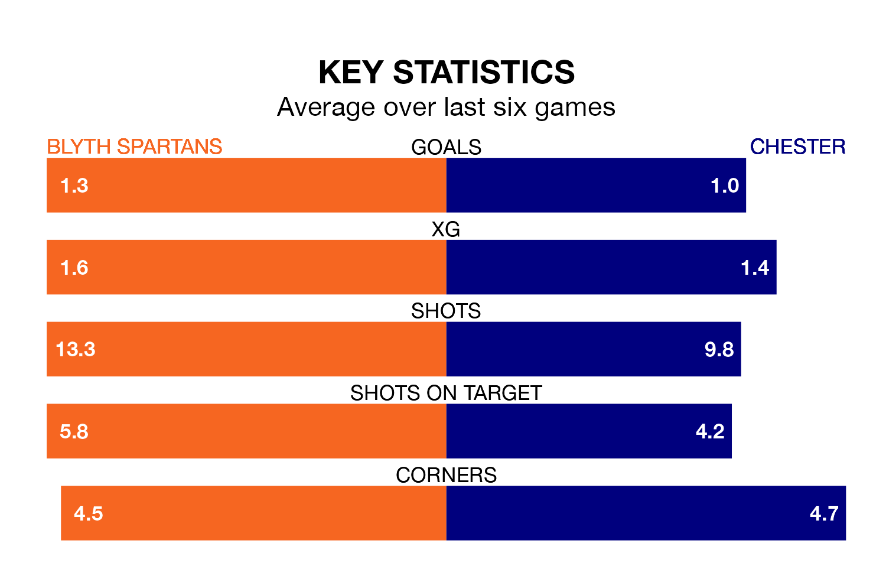

Blyth Spartans host Chester in Saturday's match at Croft Park looking to bounce back from defeat last time out in National League North and South.
Blyth Spartans, who sit zero in the league after 22 games, fell to a 3-0 away defeat to Alfreton Town on December 16.
They face a Chester side who secured a draw in their last match, a 0-0 tie with Boston United, and who sit 11th in the table.
In Wyll Stanway, Chester can rely on one of the league's safest pair of hands. He has kept 10 clean sheets in his 20 appearances this season, and only one other 'keeper – Tamworth's Jasbir Singh – has been able to prevent the opposition scoring on more occasions in National League North and South.
In Blyth Spartans' net, Alex Mitchell has five clean sheets in 19 games. He has conceded a goal every 81 minutes, 70% more often than the 138 minutes between goals for Stanway.
The home team are in disappointing form in National League North and South, with one win and two draws from their last six games.
With three wins and three draws over that period, the visitors' form is much better – they have taken 12 points from 18, compared to Blyth Spartans' five.
With 25 goals in 21 games so far this season, Chester are the league's joint--10th-lowest scorers with 1.2 goals per game. But they are conceding fewer than average too, letting in 16 goals at a rate of 0.8 per game.
Blyth Spartans, meanwhile, are above average scorers, with 1.5 goals per game, compared to a league average of 1.4. They have also conceded 1.5 goals per game.
In the last three years, Blyth Spartans and Chester have played each other on five occasions. Chester won all of them.
On average, Blyth Spartans scored 0.6 goals and Chester 2.6 in those matches.
Their last meeting was on September 9, when Chester won 2-1 at home.
